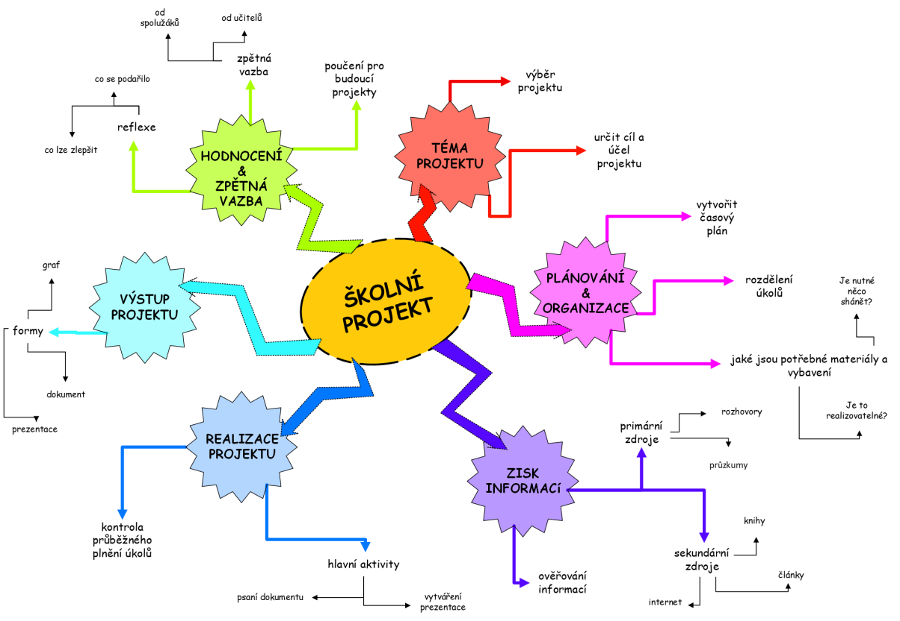

Systémové myšlení
Systémové myšlení je přístup k řešení problémů, který se zaměřuje na pochopení, jak jednotlivé části nějakého systému spolupracují a jak jsou propojené. Místo toho, abychom se soustředili jen na jednotlivé prvky nebo události, snažíme se vidět větší celek – tedy celý systém. Tento způsob myšlení nám pomáhá lépe porozumět složitým problémům, identifikovat jejich příčiny a najít efektivní řešení. Příkladem systému může být lidské tělo, ekologický systém, výrobní linka, společnost, ale také třeba počítač nebo automobil.
Využití systémového myšlení v praxi
- Představte si řízení dopravy v rušném městě. Systémové myšlení zde zahrnuje nejen tok vozidel, ale také pohyb chodců, veřejnou dopravu, semafory a silniční infrastrukturu. Analýzou těchto propojených komponent mohou urbanisté vytvořit efektivní dopravní systémy, které minimalizují dopravní zácpy a zvyšují celkovou mobilitu.
- Ve zdravotnictví se při řešení readmise pacientů uplatňuje systémové myšlení. Poskytovatelé zdravotní péče se nezaměřují pouze na individuální péči o pacienty a uvažují o širším systému. To zahrnuje vzdělávání pacientů, podporu po propuštění, komunikaci mezi zdravotníky a přístup k následné péči.
- Dalším příkladem použití systémového myšlení je u automobilu: automobil je složitý systém, který se skládá z mnoha částí, jako je motor, brzdy, převodovka a palivový systém. Systémové myšlení nám říká, že když se porouchá jedna část, může to ovlivnit celý automobil.Například problém s motorem může způsobit, že auto nebude správně fungovat, i když všechny ostatní části jsou v pořádku.
- U automobilu ještě zůstaneme. Výrobní linka pro automobily je složitý systém, kde je každá část linky propojená s ostatními. Pokud by se například zastavila montáž motorů kvůli technickému problému, může to zpomalit nebo zastavit celý proces výroby. Vedení výrobní linky musí neustále sledovat a optimalizovat vztahy mezi jednotlivými částmi výrobního procesu, aby byl celý systém efektivní. Pokud si v rámci systémového myšlení uvědomíme vzájemnou propojenost a dopady jednotlivých rozhodnutí, můžeme najít řešení, jak zvýšit efektivitu výroby.
- Ekosystém: Představte si les jako systém. Stromy, zvířata, voda, půda a vzduch jsou propojené. Pokud zmizí například jeden druh zvířete, může to způsobit změny v potravním řetězci, což ovlivní i další druhy, a tím celý ekosystém. Systémové myšlení nám umožňuje pochopit, jak jsou tyto složky závislé na sobě navzájem.
- Školní projekt: I skupinový školní projekt můžeme chápat jako systém. Každý člen týmu má určitou roli, a pokud někdo nesplní svou část práce, ovlivní to výsledek celého týmu. Úspěch projektu závisí na tom, jak efektivně všichni spolupracují. 